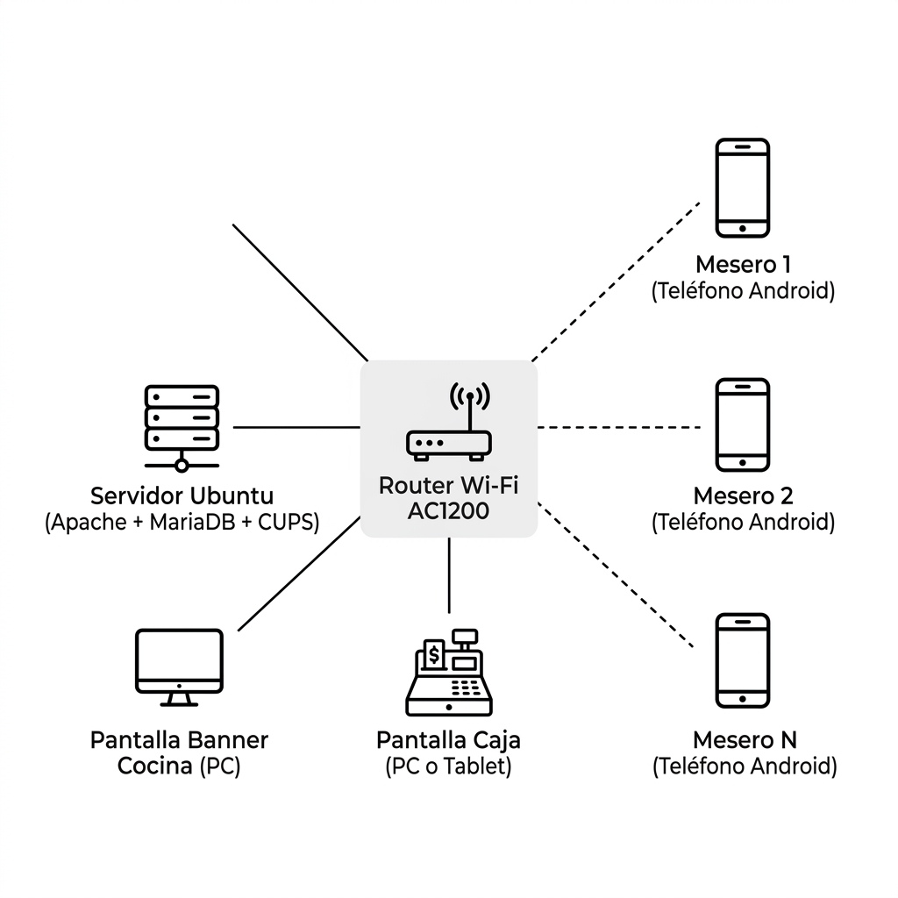

10. Infraestructura
10.1. Servidor Ubuntu 22.04
| Componente | Mínimo | Recomendado |
|---|---|---|
| CPU | Intel Core i3 / AMD Ryzen 3 (4 núcleos) | Intel Core i5 / AMD Ryzen 5 (6 núcleos) |
| RAM | 4 GB | 8 GB |
| Almacenamiento | 120 GB SSD | 256 GB SSD NVMe |
| Red | Ethernet Gigabit + Wi-Fi 802.11ac | Ethernet Gigabit + Wi-Fi 6 |
| USB | 4 x USB 3.0 | 6 x USB 3.0 |
Despliegue Unificado (Docker-Compose)
Tanto para el entorno de Desarrollo (localhost) como para Producción (Servidor Ubuntu), se utiliza una estrategia de despliegue unificada basada en Docker Compose. Esto garantiza paridad absoluta entre entornos y aísla las dependencias del sistema operativo base.
(Ver sección 10.5 para el detalle completo de la arquitectura Docker LAMP).
Configuración de Impresión (CUPS)
Para la impresión de tickets, se instala CUPS y se configura una impresora térmica conectada por USB al servidor:
sudo apt install -y cups cups-bsd
sudo usermod -aG lpadmin www-data
# Agregar impresora térmica vía interfaz web de CUPS
# http://localhost:631/admin
# Guardar nombre de impresora en configuración del sistema10.2. Dispositivos Android y Diademas
| Especificación | Mínimo | Recomendado |
|---|---|---|
| SO Android | 8.0 (Oreo, API 26) | 11+ (API 30) |
| RAM | 3 GB | 4 GB+ |
| Almacenamiento libre | 200 MB | 500 MB |
| Procesador | 64-bit, Octa-core 1.8 GHz | Snapdragon 6-series |
| Navegador | Chrome 90+ | Chrome 120+ |
| Bluetooth | 4.2 (para diadema) | 5.0+ |
10.2.1. Análisis y Evaluación de Hardware (Micrófonos y Diademas)
Para mitigar las interferencias de ruido acústico en entornos comerciales demandantes (cocina, extractor, campanas, y el bullicio del salón), se definen los siguientes criterios de selección de hardware:
- Conexión USB Nativa: Se prefiere sobre conectores Jack 3.5mm debido a su inmunidad a estática analógica e interferencias eléctricas del local. Para dispositivos Android se requiere adaptador OTG USB-C.
- Patrón de Captura Cardioide / Unidireccional: La cápsula del micrófono debe atenuar el sonido ambiental trasero y lateral, concentrando la captura en la voz del mesero/cocinero.
- Diadema Monoaural: Mantiene un oído libre para que el operario pueda escuchar a los clientes o compañeros mientras usa el sistema.
- Material Sanitario: Almohadillas de vinipiel o cuero sintético fáciles de limpiar y desinfectar. Evitar esponjas de espuma por acumulación de grasa y humedad.
Modelos Evaluados en Costo-Beneficio:
- Gama Económica (Xuuly / Genéricos de Call Center): Costo de ~$350 – $400 MXN. Cuenta con brazo flexible largo de 360° que posiciona la cápsula de forma precisa. Recomendado para fases iniciales.
- Gama Empresarial (Poly Blackwire 3210 / Plantronics): Costo de ~$750 – $800 MXN. Integra un chip procesador de señales digital (DSP) que suprime ruidos eléctricos antes de mandar la señal PCM a la PWA, maximizando la precisión del motor VOSK a tasas superiores al 99%.
10.3. Red Local

Figura 3. Topología de red local del restaurante
| Parámetro | Especificación |
|---|---|
| Router | Dual band (2.4 GHz y 5 GHz), mínimo AC1200 |
| Cobertura Wi-Fi | 100% área de comedor y cocina (repetidores si es necesario) |
| Subred | 192.168.x.x/24, servidor con IP estática |
| DNS local | comandas.local apuntando a IP del servidor |
| Puertos | 80 (HTTP), 443 (HTTPS) abiertos |
| Ancho de banda local | Mínimo 20 Mbps entre dispositivos y servidor |
10.4. Ambiente de Desarrollo (localhost)
El entorno de desarrollo corre en la laptop del desarrollador con el siguiente stack:
| Componente | Versión | Notas |
|---|---|---|
| Servidor | Apache 2.4 | localhost, configuración en XAMPP / nativo |
| PHP | 8.3 | Con PHP-FPM habilitado |
| Base de datos | MariaDB 11 | Upgrade respecto al 10.6+ de producción |
Documentación de instalación: /home/carlos/GitHub/caelitandem_home/restaurantb/docs/INSTALLATION_SUMMARY.md
HTTPS en Desarrollo
Para desarrollo local se usa un certificado de confianza firmado por CA local (ver §10.4 / Opción B). La configuración HTTPS es obligatoria para que getUserMedia() funcione en Chrome Android. Esto sustituye al certificado autofirmado por defecto que no era de confianza para los dispositivos cliente en la red local.
Acceso al Micrófono en Redes Locales Inseguras (HTTP/HTTPS)
Dado que los navegadores móviles restringen el acceso al micrófono (getUserMedia) exclusivamente a contextos seguros (HTTPS o localhost), acceder desde dispositivos móviles a la IP del servidor de desarrollo local (ej. http://192.168.1.128:7001/ayd-os/) causará que el navegador bloquee el micrófono silenciosamente. Existen dos soluciones validadas:
Opción A: Habilitar Flags de Chrome en Dispositivos Cliente (Desarrollo y Pruebas Rápidas)
Permite tratar la IP de la red local como origen seguro de manera temporal sin requerir certificados:
- En el navegador Chrome del dispositivo (PC o teléfono Android), navegue a la dirección:
chrome://flags - Busque la preferencia:
unsafely-treat-insecure-origin-as-secure(Insecure origins treated as secure). - Habilite la opción e ingrese la URL base del servidor de desarrollo local, incluyendo su puerto respectivo (ej.
http://192.168.1.128:7001). - Presione el botón Relaunch para reiniciar el navegador.
Estatus: Verificado y funcionando con éxito (micrófono habilitado sin HTTPS en red local).
Opción B: Despliegue con Certificados de Confianza y CA Local (Formal e Integración Múltiple)
Habilita HTTPS nativo en toda la red local para evitar configurar cada dispositivo cliente. (Implementado con Éxito):
Se ha implementado el generador de certificados mkcert con la IP local 192.168.1.71. Para más detalles, consulte la memoria de instalación y los pasos de registro del certificado raíz en dispositivos cliente: certificados locales https para android-webbrowser.html.
Resultado: Chrome reconoce la conexión de red local como segura por defecto (candado verde) y otorga permisos al micrófono de forma nativa e inmediata tras registrar la CA local en el dispositivo.
Reglas de Arquitectura para las Webapps (KDS y Caja)
- Framework: Flight PHP como micro-framework para routing y middleware.
- Vistas: Motor de plantillas Plates (League) para todas las vistas PHP.
- Interactividad y Event Polling: HTMX para intercambio parcial de HTML server-driven. Las interfaces críticas como el KDS (Cocina) y la Caja no usan WebSockets para evitar fugas de memoria, sino Event Polling nativo de HTMX (ej.
hx-trigger="every 3s") para lograr reactividad en tiempo real manteniendo la arquitectura frugál sin estado persistente. - Autenticación: Delight PHP Auth para login, roles y sesiones.
- UI/UX: Responsiva, homologada, estilo sencillo y de alta usabilidad para los roles: Mesero, Cajero, Cocinero. Diseño basado en principios de UI/UX estándar y modernos al 2026.
Instalación del Stack Docker LAMP – restaurantb
📦 Descripción General
Este documento resume todo el proceso de instalación y configuración del stack LAMP (Linux, Apache, MariaDB, PHP) para el proyecto restaurantb bajo Docker. Incluye los componentes del docker‑compose.yml, los archivos de configuración default y custom, variables de entorno y los comandos habituales para operar el entorno.
📋 Prerrequisitos
- Docker Engine + Docker Compose instalados (versión 2.20+ recomendada).
- Acceso a la carpeta del proyecto:
cd /home/carlos/GitHub/caelitandem_home/restaurantb/contenedor
/opt/lampp/bin/mysql.🗂️ Estructura del proyecto
restaurantb/
├─ contenedor/
│ ├─ Dockerfile # Construye la imagen restaurantb_web
│ ├─ docker-compose.yml # Orquesta los servicios (web, db, pma)
│ ├─ .env # Variables de entorno (no versionado, pre-configurado para dev)
│ ├─ setup-ssl.sh # Script de automatización de HTTPS local (mkcert)
│ ├─ conf/
│ │ ├─ php-restaurantb.ini # Config PHP 8.3 adaptada de XAMPP
│ │ ├─ mariadb-restaurantb.cnf # Config MariaDB 11 adaptada de my.ini
│ │ ├─ apache-restaurantb.conf # Config Apache 2.4 (sin rutas Windows)
│ │ └─ pma-config.user.inc.php # Config phpMyAdmin (auth cookie, allow arbitrary)
│ └─ bd/
│ └─ init/
│ └─ 01_pmadb.sql # Crea usuario pma y base phpmyadmin
🐳 docker‑compose.yml – Servicios principales
| Servicio | Imagen | Puertos (host → contenedor) | Volúmenes | Comentario |
|---|---|---|---|---|
| web | restaurantb_web:latest (PHP 8.3‑Apache) | 6001 → 80 (HTTP) 8443 → 443 (HTTPS) | ./www:/var/www/html (código) ../logs/apache:/var/log/apache2 | Servidor web que sirve la aplicación. Config extra apache-restaurantb.conf y php-restaurantb.ini se copian en la imagen. |
| db | mariadb:11 | 6002 → 3306 | db_data:/var/lib/mysql ../logs/mariadb:/var/log/mysql ../bd/init:/docker-entrypoint-initdb.d (scripts de arranque) ./conf/mariadb-restaurantb.cnf:/etc/mysql/conf.d/restaurantb.cnf:ro | Base de datos con configuración custom (charset utf8mb4, bind‑address 0.0.0.0, logs, slow‑query‑log, etc.). |
| pma | phpmyadmin:latest | 6080 → 80 (expuesto a *0.0.0.0*) | ./conf/pma-config.user.inc.php:/etc/phpmyadmin/config.user.inc.php:ro | Interfaz web para gestión de MySQL/MariaDB. PMA_ARBITRARY=1 permite conectar a cualquier servidor, AllowArbitraryServer habilitado en la configuración. |
🔧 Configuraciones *default* vs *custom*
| Archivo | Propósito | Estado | Comentario |
|---|---|---|---|
conf/php-restaurantb.ini | php.ini adaptado a PHP 8.3 (límites, logging, timezone, etc.) | Custom | Comentados los valores Windows, se usan rutas Linux y se habilitan buenas prácticas de producción. |
conf/mariadb-restaurantb.cnf | my.cnf adaptado a MariaDB 11 (charset, innodb, buffers, bind‑address, logs) | Custom | Se omiten rutas Windows, se ajustan tamaños de buffer a contenedor. |
conf/apache-restaurantb.conf | Config Apache extra (headers de seguridad, compresión, disables XAMPP‑only modules) | Custom | Carga módulos ssl, rewrite, headers, deflate; desactiva ServerTokens y ServerSignature. |
conf/pma-config.user.inc.php | Config phpMyAdmin (blowfish secret, auth cookie, AllowArbitraryServer) | Custom | Permite login seguro y conexión a cualquier host MySQL. |
bd/init/01_pmadb.sql | Script de inicialización (crea usuario pma y base phpmyadmin) | Custom | Se ejecuta sólo la primera vez del contenedor de DB. |
setup-ssl.sh | Script de automatización HTTPS local (mkcert, detección IP, reinicio Apache) | Custom | Ejecuta todo el flujo de generación e inyección SSL. |
.env | Variables de entorno (contraseñas, puertos) | Custom | No versionado (.gitignore). Pre-configurado localmente para desarrollo inmediato. |
🔐 Variables de entorno (archivo .env)
# MariaDB credentials
MARIADB_ROOT_PASSWORD=comite_2026
MARIADB_DATABASE=restaurantb
MARIADB_USER=restaurantb_usr
MARIADB_PASSWORD=rb_pass_2026
# Puertos externos (host → contenedor)
WEB_HTTP_PORT=6001
WEB_HTTPS_PORT=8443
DB_PORT=6002
PMA_PORT=6080
> Nota: Cambia estas contraseñas antes de pasar a producción.
🚀 Comandos de operación
| Acción | Comando | Comentario |
|---|---|---|
| Iniciar / (re)construir | docker compose up -d --build | Levanta los 3 servicios; --build recompila la imagen web si el Dockerfile cambió. |
| Configurar HTTPS local (mkcert) | ./setup-ssl.sh | Ejecuta en el host la detección de IP, genera el certificado SSL local y reinicia Apache de forma automatizada. |
| Detener | docker compose down | Elimina contenedores, redes y volúmenes *named* (pero conserva db_data). |
| Reiniciar | docker compose restart | Reinicia los contenedores sin volver a crear imágenes. |
| Estado | docker compose ps | Muestra estado y puertos expuestos. |
| Logs (todos) | docker compose logs -f | Sigue los logs en tiempo real. |
| Logs de un servicio | docker compose logs -f (p.ej. db) | Filtra por servicio. |
| Shell dentro de un contenedor | docker compose exec | Útil para depuración (web, db, pma). |
| Conectar con cliente MySQL heredado | /opt/lampp/bin/mysql -h 127.0.0.1 -P 6002 -u root -p | Contraseña: comite_2026. Cambia root por restaurantb_usr o pma según necesites. |
🌐 Resumen rápido de la instalación Docker LAMP (restaurantb) con URLs completas (IP de Red 192.168.1.71)
| Servicio | URL completa (Red Local / localhost) | Usuario / Contraseña (ejemplo) |
|---|---|---|
| Web – HTTP | http://192.168.1.71:6001 (o http://localhost:6001) | — |
| Web – HTTPS | https://192.168.1.71:8443 (o https://localhost:8443) | — (certificado de confianza firmado por CA local mkcert) |
| phpMyAdmin | http://192.168.1.71:6080 (o http://localhost:6080) | Usa las credenciales de db (p. ej. root/comite_2026). |
| MariaDB (acceso CLI) | mysql -h 192.168.1.71 -P 6002 -u | root/comite_2026 restaurantb_usr/rb_pass_2026 pma/pma_pass_2026 |
📌 Notas finales
- Los puertos están mapeados a
0.0.0.0, por lo que cualquier máquina de la LAN puede acceder usando la IP del host (ej:https://192.168.1.71:8443). - Para producción en la nube (ej: Let's Encrypt), se reemplaza el certificado local
mkcertpor uno público y se cambian las contraseñas del archivo.env. - Los volúmenes
db_datay los logs persisten en../bd/datay../logs/*respectivamente, facilitando backups.
🎙️ Anexo: Uso del Micrófono en Dispositivos Móviles (Red Local)
El problema: localhost vs IP Local (192.168.x.x)
Los navegadores modernos tienen una regla estricta: localhost se considera siempre un entorno seguro, permitiendo el acceso al micrófono (getUserMedia). Sin embargo, al acceder desde un dispositivo móvil en la misma red local a través de la IP de la máquina (ej: https://192.168.1.71:8443), el navegador detectará si el certificado es autofirmado y bloqueará el micrófono silenciosamente.
Aunque se acepte la advertencia ("Continuar de forma insegura"), el navegador degradará el contexto de seguridad y bloqueará el micrófono silenciosamente.
Soluciones prácticas para red local
#### Opción A: La forma rápida (Ideal para pruebas o pocos dispositivos)
Permite tratar la IP local como segura directamente en Chrome de Android.
1. En el navegador del móvil, visita chrome://flags
2. Busca la opción: Insecure origins treated as secure
3. Añade la URL con la IP local y el puerto HTTP (no es necesario HTTPS para este flag), por ejemplo: http://192.168.1.71:6001
4. Cambia la opción a Enabled y presiona Relaunch (Reiniciar).
*Resultado: Chrome permitirá usar el micrófono sobre la red local sin requerir un HTTPS válido.*
#### Opción B: Certificado Raíz propio y mkcert
Esta es la forma robusta para múltiples dispositivos sin tener que tocar configuraciones internas del navegador.
B.1) Estado de hecho en la instalación (IP 192.168.1.71)
Se ha generado una CA local y un certificado firmado para la IP 192.168.1.71. Para conectarte desde dispositivos clientes Android:
- Descarga el certificado de la CA local desde: http://192.168.1.71:6001/ca.crt.
- Instálalo en tu dispositivo Android yendo a: Ajustes > Seguridad > Cifrado y credenciales > Instalar certificado > Certificado de CA.
- Con esto, al acceder a
https://192.168.1.71:8443tendrás candado verde y soporte nativo de micrófono.
B.2) Estado de hecho en laptops y computadoras en LAN
Si deseas acceder a la aplicación desde laptops o computadoras en la misma red mediante Chrome con soporte de micrófono, instala la CA local descargada en el sistema cliente:
- Windows: Descarga la CA desde http://192.168.1.71:6001/ca.crt. Haz doble clic en
ca.crt> Instalar certificado > Usuario actual > Selecciona "Colocar todos los certificados en el siguiente almacén" > Elige "Entidades de certificación de raíz de confianza" > Finalizar y aceptar alerta de Windows. Reinicia Chrome. - macOS: Descarga la CA, ábrela con Acceso a Llaveros (Keychain Access), arrástrala al llavero de Inicio de sesión (login). Haz doble clic en el certificado, expande Confianza (Trust), y cambia a "Confiar siempre" (Always Trust). Reinicia Chrome.
- Linux (Ubuntu/Debian): Copia el certificado a
/usr/local/share/ca-certificates/ca.crty ejecutasudo update-ca-certificates. Para registrarlo en el perfil NSS de Chrome, ejecuta:certutil -d sql:$HOME/.pki/nssdb -A -t "CT,C,C" -n "CA Local" -i ca.crty reinicia Chrome.
B.3) Uso de setup-ssl.sh en Cambios de Host o de IP (Recomendado)
Si la IP del servidor host cambia o estás levantando la instalación por primera vez en otra máquina, puedes automatizar todo el proceso con un solo comando:
- Asegúrate de tener
mkcertinstalado en el sistema host (sudo apt update && sudo apt install -y mkcert). - Ejecuta el script de inicialización desde la carpeta del contenedor:
./setup-ssl.sh - El script detectará la nueva IP de forma automática, generará los certificados válidos en
ssl/, copiará la CA pública awww/ca.crty reiniciará Apache. - Posteriormente, descarga la nueva CA raíz en cada teléfono Android desde la nueva IP e instálala en la sección de Seguridad.
B.4) Método Alternativo Manual Paso a Paso
Si prefieres realizar el procedimiento de forma manual:
- Instale
mkcerten el servidor local (ej:sudo apt install mkcert). - Genere la Autoridad Certificadora local:
mkcert -install. - Cree los certificados para la nueva IP (ej.
192.168.1.100):
mkcert -cert-file ../ssl/server.crt -key-file ../ssl/server.key 192.168.1.100 localhost 127.0.0.1. - Reemplace los archivos generados en la carpeta
ssl/del host (que se monta en/etc/apache2/sslen el contenedorweb). - Copie el certificado de la CA raíz pública (
~/.local/share/mkcert/rootCA.pem) comowww/ca.crtpara permitir su descarga por red. - Reinicie el contenedor de Apache:
docker compose restart web. - Instale el archivo
ca.crtgenerado como Certificado de CA en los teléfonos clientes Android de prueba.
*Para más detalles y comandos de solución de problemas, consulte la memoria de instalación: certificados locales https para android-webbrowser.html.*
11. Seguridad, Resiliencia y Observabilidad
11.1. Protección Activa
- Validación de entradas: Sanitización de datos en todos los endpoints para prevenir SQL injection (uso estricto de PDO prepare/execute).
- Rate Limiting (Middleware): Para evitar ataques de fuerza bruta (DDoS) o colapso por reintentos de sincronización fallidos de las PWA, Flight PHP incorpora un Middleware de Rate Limiting que limita peticiones por IP y Token, devolviendo
429 Too Many Requestssi se excede el umbral. - Backup automático: Script cron cada hora:
mysqldump comandas_db > /backup/comandas_$(date +%Y%m%d_%H).sql
11.1.5. Observabilidad (Telemetría y Logging)
La salud del sistema offline se monitoriza a través de un esquema estructurado (estilo Log4j / PSR-3) que garantiza la trazabilidad convergente:
- Ingesta de Logs en Ráfaga: Las PWA móviles capturan errores localmente en Dexie.js (
logs_telemetria) y envían ráfagas JSON (Batching) al servidor cuando recuperan la conectividad. - Device Fingerprint: Cada PWA genera y almacena en caché un UUID único de dispositivo en su primer inicio. Esto permite al servidor identificar exactamente de qué tablet o diadema proviene cada error reportado.
- Correlation ID: Toda transacción o comanda originada en el frontend genera un identificador único que viaja por la red hasta la base de datos MariaDB. Si la transacción falla en PDO, el error registrado hereda este ID, logrando trazar el ciclo de vida completo de la petición (Trazabilidad Distribuida).
- Dashboard Centralizado (Log Viewer): Una interfaz administrativa en el servidor construida con HTMX permite visualizar, filtrar (INFO, WARN, ERROR, CRITICAL) y buscar en tiempo real los registros de la tabla
SYS_LOGS, cruzando errores del backend con los errores del cliente (PWA). - Database Log Rotation: Para prevenir el colapso del disco duro del servidor por acumulación masiva de registros telemétricos, se configura un MariaDB Event (tarea programada del motor BD) que ejecuta un Hard Delete diario de registros INFO/DEBUG con más de 30 días de antigüedad, conservando los errores críticos.
11.2. Resiliencia Operativa
- Reconocimiento 100% offline: VOSK no requiere internet. La transcripción ocurre localmente.
- Cola offline: Comandas se almacenan en IndexedDB ante pérdida de Wi-Fi y se sincronizan al restaurar.
- Independencia de cloud: Sin dependencia de AWS, Google Cloud, Azure, ni APIs externas.
- UPS recomendado: 600VA+ para protección ante cortes eléctricos.
- Caché persistente: El modelo VOSK permanece en IndexedDB tras reinicios del navegador.
- Evicción IndexedDB: Llamar a
navigator.storage.persist()para solicitar almacenamiento persistente y evitar que el navegador elimine el modelo VOSK o la cola offline. - Dexie en modo incógnito: IndexedDB puede fallar silenciosamente en modo incógnito. Envolver operaciones Dexie en
try/catchy avisar al usuario si la persistencia no está disponible. - Background Sync en Doze Mode (D1): En Android con ahorro de batería activo, el Service Worker puede estar congelado horas. Las comandas offline no se envían automáticamente al reconectar. Solución: cola de reintentos manual en Dexie como respaldo.
11.3. Privacidad
- Audio nunca sale del dispositivo: Las grabaciones se procesan localmente y no se transmiten ni almacenan.
- Datos almacenados mínimos: Solo texto transcrito, hora y productos. Sin biométricos ni datos sensibles de clientes.
- Control local: Todos los datos residen físicamente en el servidor del restaurante.
11.4. Issues Conocidos y Mitigaciones (PWA Android)
El catálogo completo de problemas técnicos identificados en el despliegue PWA/TWA sobre dispositivos Android, junto con sus mitigaciones, ha sido trasladado al documento de control de proyecto.
→ Ver Issues Conocidos y Mitigaciones11.5. Control Cronológico y Mitigación de Desfases (Marcas de Tiempo)
En un entorno offline, la desincronización de relojes entre los dispositivos cliente (Chrome) y el servidor (Apache/MariaDB) o el envío de comandas horas después de su creación debido a fallas de red, exige políticas cronológicas estrictas:
1. Flujo PWA hacia Servidor (PWA to Server Side)
- Al finalizar un dictado o acción en la PWA, el script
app.jsinyecta en el payload de IndexedDB:cliente_timestamp: La hora absoluta del dispositivo (para auditoría).duracion_offline_ms: Un contador dinámico que inicia en 0 y acumula la duración exacta que el registro pasa encolado localmente.
- Al restaurar la conexión, el Service Worker transmite el payload con el valor acumulado de
duracion_offline_ms. - El servidor calcula el instante real del registro restando el tiempo offline del instante de recepción:
Hora_Real_Registro = server_received_time - duracion_offline_ms - Esta marca calculada se inyecta en los Stored Procedures de MariaDB, garantizando que el historial refleje la secuencia cronológica real del negocio, independientemente de desfases de red.
2. Flujo Servidor hacia PWA (Server Side to PWA)
- Las alertas y notificaciones emitidas por Server-Sent Events (SSE) incluyen obligatoriamente
server_sent_timestampy un tiempo de vida útil (ttl_segundos, ej: 120s). - Si al llegar al cliente la diferencia temporal excede el TTL, la alerta se descarta o desvía a un historial secundario silencioso.
- Para evitar que ráfagas de notificaciones acumuladas durante desconexiones activen la reproducción masiva de TTS ("Voz Fantasma"), el script limpia la cola de SpeechSynthesis ejecutando
window.speechSynthesis.cancel()si el desfase del paquete entrante excede los 5 segundos.
12. Vinculación con Skills del Agente (SSOT)
La infraestructura, automatización NTFS, bases de datos y control de servicios del servidor de comandas se rige por los siguientes estándares documentados en el directorio .agents/skills/:
- Apache 2.4 Hardening (
.agents/skills/skill-apache24-hardening/SKILL.md): Directivas de virtualización, seguridad en virtual hosts, y tunelización con PHP-FPM. - MariaDB 11 Ops (
.agents/skills/skill-mariadb11/SKILL.md): Tuning del optimizador de consultas, replicación y features de la versión 11 para la baserestaurantb. - Database Evolution (
.agents/skills/skill-database-evolution/SKILL.md): Modelado e histórico de splits de tablas de transacciones. - Native Service Worker (
.agents/skills/skill-service-worker-native/SKILL.md): Cacheo persistente del shell de aplicación y optimización de redes móviles. - Dexie.js IndexedDB (
.agents/skills/skill-dexie-indexeddb/SKILL.md): Persistencia e indexación offline de comandas y logs. - Flight PHP Framework (
.agents/skills/skill-flightphp/SKILL.md): Inyección de dependencias, controladores ligeros y contratos REST. - Plates Templating Patterns (
.agents/skills/skill-plates-templating/SKILL.md): Reutilización de fragmentos HTML y layouts de caja/cocina. - Delight PHP Auth (
.agents/skills/skill-delight-php-auth/SKILL.md): Autenticación persistente y seguridad de accesos. - HTMX Patterns (
.agents/skills/skill-htmx-patterns/SKILL.md): Integración server-driven sin recargar el navegador. - UI/UX Modern Refactor (
.agents/skills/skill-ui-modern-refactor/SKILL.md): Plantillas modernas y responsividad de componentes.